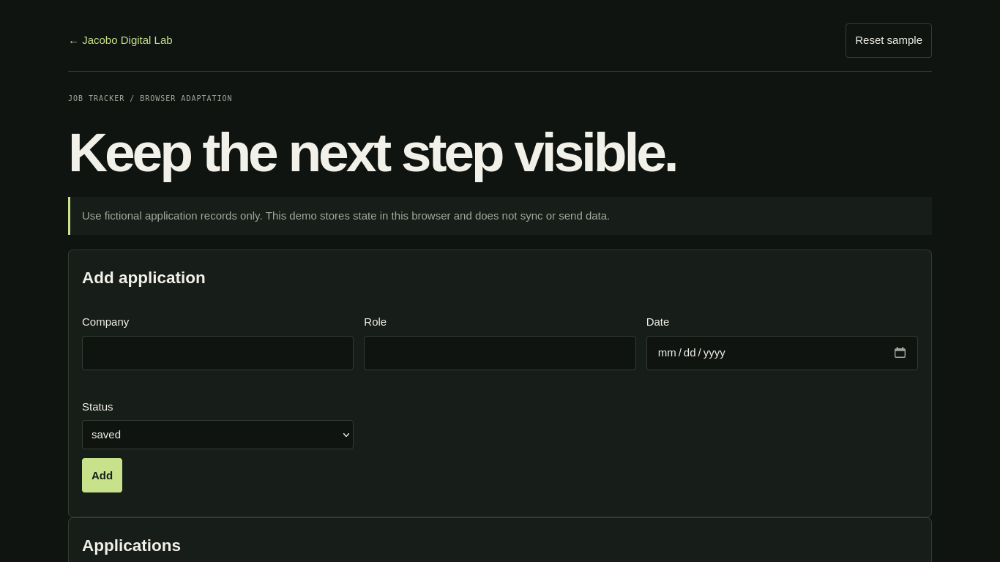

PROJECT CASE STUDY
Job Application Tracker
Organize fictional application records
Add an application, update its status, filter by stage and export a CSV. Browser data can be reset.

Open live demo ↗01 / PROBLEM
Problem: keep application follow-up in a small local tracker.
02 / OBJECTIVE
Objective: record company, role, date and status consistently.
03 / SOLUTION
Solution: browser adaptation of the local Python/SQLite and CSV utility.
04 / ARCHITECTURE
Architecture: static form, fictional starter rows and local browser storage.
05 / IMPLEMENTATION
Implementation: create, search, status filter and CSV export.
06 / TESTING
Testing: required fields, status updates and reset.
07 / LIMITATIONS & ROADMAP
Limitations & roadmap: no sync, accounts or server; do not enter sensitive information in this public demo.
08 / ACCESS
Access: demo, repository and technical notes.